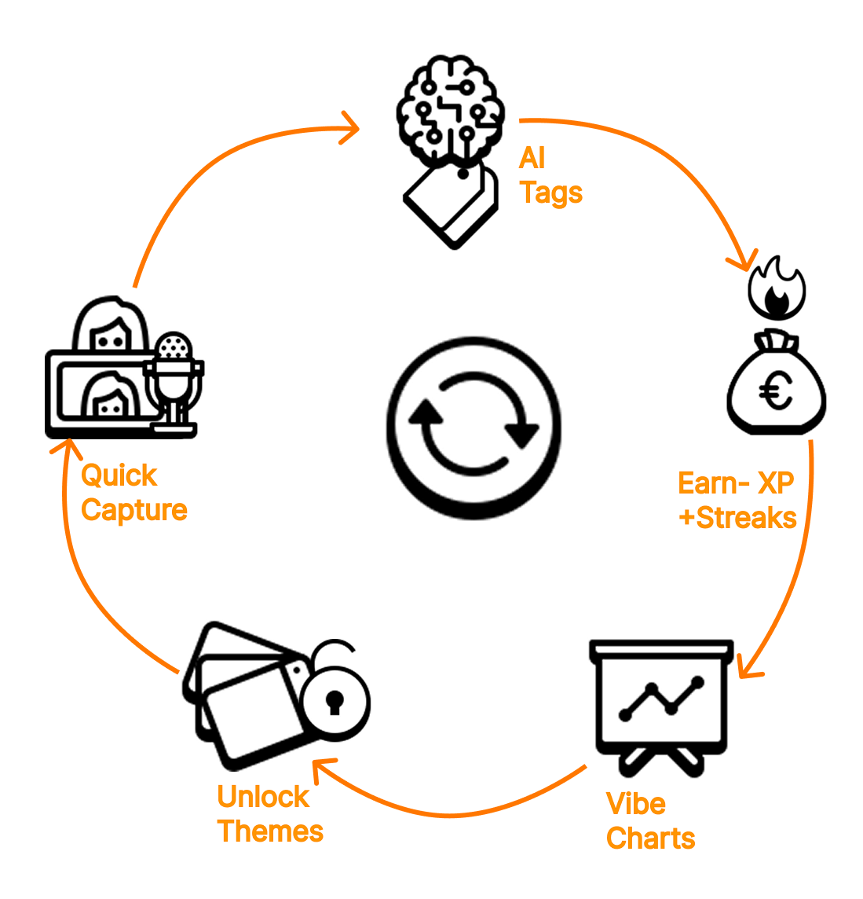
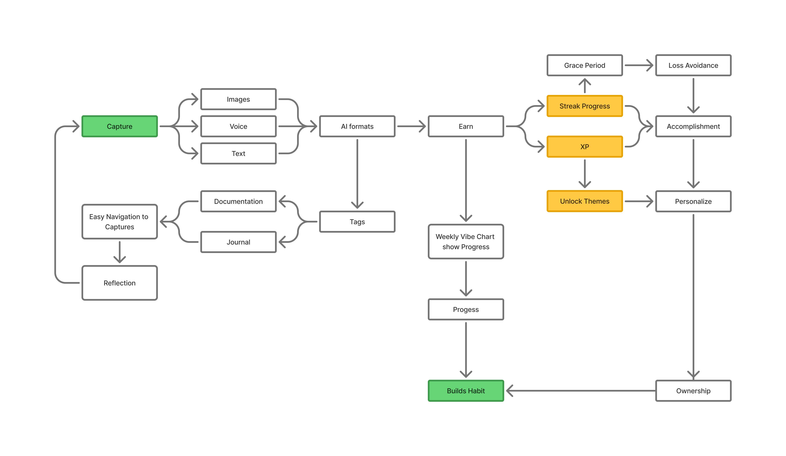

1. High Concept
Momentum is a gamified documentation and journaling app that helps students, designers, and professionals capture, organize, and grow their ideas while staying motivated through game mechanics such as XP, streaks, badges, and unlockable themes. It combines AI assistance with habit-forming design to make documentation both effortless and rewarding.
2. Core Design Pillars
| Pillar | Description |
|---|
| Accessibility | Capture ideas instantly through text, voice, or images. |
| Engagement | Reinforce daily habit through streaks, rewards, and prompts. |
| Assistance | AI formats, summarizes, and curates notes automatically. |
| Reflection | Visual summaries, vibe charts, and resurfaced entries encourage reflection. |
| Personalization | Unlockable themes and fonts that reflect the user's style. |
3. Core Loop
- Capture: User logs an idea or note.
- Organize: AI formats and categorizes the entry.
- Earn: Gain XP and streak progress.
- Reflect: AI generates summaries and vibe reports.
- Personalize: Unlock visual themes and rewards.
Player motivation: Create → Progress → Reflect → Personalize → Repeat.

How It Works

4. Design Philosophy
“Documentation should feel as satisfying as creation.”
- Non-intrusive gamification: Rewards support consistency, not addiction.
- Flow-first design: Clean visuals for deep focus.
- AI as collaborator: Enhances creativity, doesn’t replace it.
- Emotionally intelligent: Encourages reflection and ownership.
5. User Research & The Challenge
Why Don't We Document?
Our research aimed to understand what motivates people to document their lives and, more importantly, what causes them to stop. We identified core friction points to build a solution that addresses them directly.
Research Findings
| Finding | Description | Design Impact |
|---|
| 😥 Friction is Fatal | Most respondents found documentation too time-consuming. "Blank page fear" was a major barrier. | Quick capture (< 2 mins), voice-to-text, photo entry |
| 📉 No Feedback, No Habit | Without feedback or a sense of progress, users quickly lost motivation. | Streaks, XP, visual progress indicators |
| 💡 The Opportunity | Users strongly requested gamification and AI to make the process easier and more fun. | AI-powered organization, gamification layer |
6. User Personas (Detailed)

👩💻 The Busy Professional
- Background: Works long hours in demanding career, values efficiency and data-driven insights.
- Primary Motivation: Track fitness progress, work achievements, and personal milestones without time investment.
- Core Barrier: No time for lengthy documentation sessions; needs instant, frictionless capture.
- Key Needs: Voice-to-text for hands-free entry, AI-generated summaries for quick review, mobile-first design for on-the-go use.
- Design Response: <2 min capture flow, hardware shortcuts (volume button trigger), weekly AI digest emails.
🎨 The Creative Dreamer
- Background: Designer, artist, or creative professional generating ideas constantly but struggling to organize them.
- Primary Motivation: Express emotions authentically, archive creative sparks before they fade, explore personal themes.
- Core Barrier: "Blank page fear" — intimidated by empty screens, needs gentle prompts to start.
- Key Needs: Visual inspiration (photo uploads), mood tracking with emotional tags, creative prompts to spark entries.
- Design Response: "Spin the Wheel" prompt system, mood color picker, photo-first entry option, unlockable aesthetic themes.
👩👦 The Overwhelmed Parent
- Background: Managing family life with limited time, wanting to preserve precious moments but feeling guilty about inconsistency.
- Primary Motivation: Create lasting memories of children's milestones without adding to mental load.
- Core Barrier: Photos scattered across devices, guilt over missed days, overwhelming backlog feeling.
- Key Needs: Automatic photo timeline assembly, forgiveness for gaps (no streak punishment), bulk import from camera roll.
- Design Response: Auto-photo timelines, "grace period" streak protection, "Memory Scrapbook" monthly auto-compilations.
🎓 The MBA Student / Growth Seeker
- Background: Focused on self-improvement, enjoys tracking metrics and seeing tangible progress over time.
- Primary Motivation: Document personal and professional growth journey, build consistent reflection habits.
- Core Barrier: Forgetfulness — needs external accountability systems to maintain routine.
- Key Needs: Streak tracking with reminders, calendar integration, visible progress metrics (XP, levels).
- Design Response: Daily streak counter with smart notifications, monthly "growth reports," achievement badges for milestones.
Each persona's pain points directly informed feature priorities, ensuring Momentum solves real problems rather than adding complexity.
7. Behavior to Features Translation
Every feature in Momentum directly addresses a user behavior insight:
| Observation (The "Why") | Design Response (The "What") |
|---|
| 📉 Users lose motivation after a few days | Streaks, XP, & micro-challenges for habit formation |
| 📝 Documentation feels "too formal" | Playful prompts ("Spin the Wheel," photo challenges) |
| 🤷♂️ Users forget to open the app | Hardware triggers (e.g., volume button) & smart reminders |
| 🔍 Users struggle to find old notes | AI auto-tagging and search by mood, topic, or date |
| 🌱 Users enjoy visible progress | Evolving visual metaphors (trees, scrapbooks) that grow |
8. Octalysis Framework Analysis
Momentum's gamification strategy is grounded in Yu-kai Chou's Octalysis Framework, balancing intrinsic and extrinsic motivators to create sustainable engagement without fostering addiction.

Core Drive 1: Epic Meaning & Calling
- Implementation: Users contribute to their personal "growth journey" — framed as building a legacy of thoughts and ideas.
- Mechanic: Monthly AI-generated "Year in Review" showing thematic evolution, "Memory Garden" visual metaphor showing personal growth.
- Psychology: Documentation becomes part of a larger narrative about self-improvement and mindfulness.
Core Drive 2: Development & Accomplishment
- Implementation: XP system, level progression (1-50), achievement badges, streak tracking.
- Mechanic: Clear progress bars, milestone celebrations with confetti animations, titles like "Creative Explorer" → "Idea Architect."
- Psychology: Visible competence development satisfies mastery needs; small wins create dopamine feedback loops.
- Balance: XP rewards effort (entries, tags, reflections) rather than quality, preventing perfectionism paralysis.
Core Drive 3: Empowerment of Creativity & Feedback
- Implementation: Users maintain complete creative control; AI suggests but never dictates.
- Mechanic: Customizable entry formats, freestyle tagging, "Spin the Wheel" for optional prompts (never mandatory).
- Psychology: Immediate feedback (AI formatting preview, instant XP gain) reinforces agency and exploration.
- Critical Design Choice: AI generates summaries/insights but NEVER writes entries — users rejected AI-generated content as inauthentic.
Core Drive 4: Ownership & Possession
- Implementation: Unlockable themes, fonts, color palettes; users "build" their personalized documentation space.
- Mechanic: Level-gated cosmetic rewards (e.g., "Midnight Blue" theme at Level 10), avatar customization, private "vaults" for sensitive entries.
- Psychology: Investment in personalization increases perceived value and switching costs; users feel ownership over their digital space.
Core Drive 5: Social Influence & Relatedness
- Implementation: Optional "Sharing Circles" for selected friends/peers; privacy-first by default.
- Mechanic: Share specific entries (never full journals), react with emojis, collaborative prompt challenges.
- Balance: Social features are opt-in to avoid peer pressure; no public leaderboards to prevent unhealthy competition.
- Psychology: Gentle social accountability without judgment; "You're on a 7-day streak like Maya!" notifications.
Core Drive 6: Scarcity & Impatience
- Implementation: Limited-time prompt themes (e.g., "Gratitude Week"), seasonal aesthetic packs.
- Mechanic: "Daily Prompt" refreshes at midnight, "Resurfaced Memory" shows one old entry per day.
- Balance: Scarcity used sparingly to avoid FOMO anxiety; no punitive timers or energy systems.
Core Drive 7: Unpredictability & Curiosity
- Implementation: Randomized "Resurfaced Entries" from past months, "Spin the Wheel" for creative prompts.
- Mechanic: Surprise badges (e.g., "Night Owl" for midnight entries), AI discovers unexpected thematic patterns in user's writing.
- Psychology: Variable rewards maintain interest; discovering forgotten entries creates delightful rediscovery moments.
Core Drive 8: Loss & Avoidance
- Implementation: Streak tracking with "grace periods" to avoid harsh punishment.
- Mechanic: Streaks don't reset immediately; users get 1 "Streak Freeze" per week. Gentle "You haven't written in 3 days" reminders (never shaming).
- Balance: Loss aversion used minimally and ethically; no "lose all progress" mechanics that create anxiety.
- Critical Choice: Missed days show as "rest days" rather than broken chains to reduce guilt.
Octalysis Balance Strategy
| Core Drive | Emphasis Level | Rationale |
|---|
| 1. Epic Meaning | Medium | Personal growth framing without grandiosity |
| 2. Accomplishment | High | Core motivator for habit formation |
| 3. Empowerment | Very High | Creative control = intrinsic motivation |
| 4. Ownership | High | Personalization drives emotional investment |
| 5. Social Influence | Low-Medium | Optional to avoid pressure |
| 6. Scarcity | Low | Minimal use to avoid anxiety |
| 7. Unpredictability | Medium | Delight through discovery, not gambling |
| 8. Loss & Avoidance | Very Low | Grace periods prevent guilt spirals |
Design Philosophy: Momentum emphasizes "White Hat" gamification (meaning, accomplishment, empowerment) over "Black Hat" (scarcity, loss avoidance) to foster intrinsic motivation and long-term healthy habits rather than addictive dependency.
9. Gamification Mechanics
| Mechanic | Description | Trigger | Motivation |
|---|
| XP System | Earn XP for actions like writing or tagging. | Each save action | Progress |
| Streaks | Daily consecutive activity tracker. | Daily use | Habit |
| Badges | Milestones for achievements. | XP milestones | Recognition |
| Theme Unlocks | Cosmetic personalization rewards. | Level progression | Ownership |
| Micro-Prompts | Short AI prompts for creativity. | Time-based | Curiosity |
10. Reward System
| Reward | Condition | Effect |
|---|
| XP Points | Each entry (+10), tag (+2) | Progress bar animation |
| Badges | "First Entry", "7-Day Flow" | Visual trophy in profile |
| Themes | Level unlocks | New color palettes |
| Titles | Total XP earned | "Creative Explorer", "Idea Architect" |
11. Core Features
- Quick Capture: Text, voice, and photo entries (< 2 mins).
- AI Summaries: Automatic formatting and insights.
- Gamification Layer: XP, badges, streaks, levels.
- Insights Dashboard: Vibe charts, summaries, resurfaced ideas.
- Social Circles: Share with selected peers (privacy-first).
- Customization: Unlock themes and fonts.
- Hardware Shortcuts: Volume button triggers for instant capture.
- Evolving Visuals: Growing plants, scrapbooks as progress metaphors.
12. AI System Overview
| Module | Function | Example |
|---|
| Voice-to-Text | Convert speech to text. | "Sketch idea: gradient logo." |
| Summarizer | Condense entries into key insights. | "Logo design inspired by flow." |
| Tag Generator | Auto-suggests topics. | #design, #workflow |
| Layout Formatter | Applies templates for readability. | Idea cards, reports |
| Insight Analyzer | Detects recurring creative themes. | "You've written about color 5× this week." |
Key Insight: Users loved AI summaries and insights, but NOT AI-written entries. AI enhances, doesn't replace.
13. Design System: Playful & Focused
Color Palette
| Color | Hex Code | Purpose |
|---|
| Indigo | #4B4DED | Primary accent, conveys focus and creativity |
| Mint | #96F2D7 | Success states and growth visualization |
| Coral | #FF8A80 | Attention highlights and energetic moments |
| White | #F9FAFB | Clean canvas for user content |
Typography
- Montserrat: Headers — Bold, confident personality
- Inter: Body text — Clear, readable, modern
Gamification Visuals
Rounded, minimalist icons with consistent stroke weight. Subtle animations like glowing progress bars and confetti bursts for rewards. Emojis 🔥 🌱 🌳 ✨ 🏆 serve as universal visual anchors.
Design Principle: Clarity over decoration — gamification elements enhance rather than distract from user content.
14. Technical Overview
| Component | Technology | Purpose |
|---|
| Frontend | Flutter / React Native | Cross-platform UI |
| Backend | Firebase | User data + XP sync |
| AI Engine | OpenAI API | Summaries + prompts |
| Database | Firestore | Store entries, streaks, badges |
15. Key Takeaways
Four critical insights emerged from the design and research process:
| Takeaway | Insight |
|---|
| 1. Reducing Friction = Retention | Simple capture methods (voice, photo, quick text) were the #1 driver for daily use. Every extra tap or screen reduces engagement. |
| 2. Gamification Builds Habits | Streaks and challenges proved crucial for encouraging consistency. Users responded to visible progress markers that celebrated effort, not perfection. |
| 3. AI Adds Value, Not Complexity | Users loved AI summaries and insights that revealed patterns in their entries. However, they rejected AI-written entries, preferring authentic self-expression with AI as a supportive tool. |
| 4. Personalization = Connection | Allowing users to customize themes, avatars, and visual styles made the documentation space feel "theirs," increasing emotional investment and long-term retention. |
These learnings shaped a product that respects user agency while providing structure, support, and celebration.
16. The Momentum Loop in Practice
Capture → Reflect → Reward → Repeat
| Phase | User Action | System Response |
|---|
| 📸 Capture | Quick entry via voice, photo, or text (< 2 mins) | Hardware shortcuts reduce friction, eliminate barriers |
| 🧠 Reflect | Review AI-generated insights | Auto-tagging, mood graphs, weekly scrapbooks |
| 🏆 Reward | View progress and achievements | Streaks, badges, growing visual metaphors (plants, trees) |
| 🔁 Repeat | Return to app through reminders | Smart, gentle prompts and personalized challenges |
This cyclical flow creates a sustainable habit system backed by behavioral psychology and Self-Determination Theory.
17. Closing Vision
"Momentum redefines documentation as a playful, rewarding, and personalized act of self-expression."
Through research-driven design and habit-focused gamification, it helps users turn small moments into meaningful, organized memories — powered by AI and sustained by intrinsic motivation.
It gives structure to spontaneity, turning everyday notes into a journey of reflection, growth, and creativity.